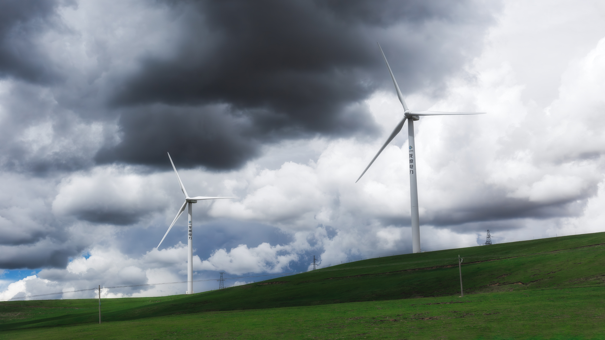

JOURNEY TO XIZANG · 2026
西藏之旅
第一次进入西藏，记录沿途所见的山川、云层与旅途片刻
这是我第一次进入西藏。高原上的云层、山脉、道路和不断变化的光线， 构成了这段旅程中最深刻的视觉记忆。
《西藏之旅》并不是一份完整的地理记录，而是我以初次到访者的视角， 留下的沿途所见、感受与短暂瞬间。


JOURNEY TO XIZANG · 2026
第一次进入西藏，记录沿途所见的山川、云层与旅途片刻
这是我第一次进入西藏。高原上的云层、山脉、道路和不断变化的光线， 构成了这段旅程中最深刻的视觉记忆。
《西藏之旅》并不是一份完整的地理记录，而是我以初次到访者的视角， 留下的沿途所见、感受与短暂瞬间。
